長期トレンド
JKMとJEPXシステムプライスの推移グラフ
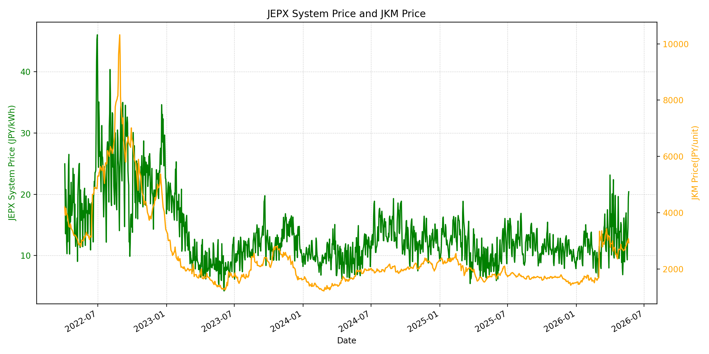
WTIの推移グラフ
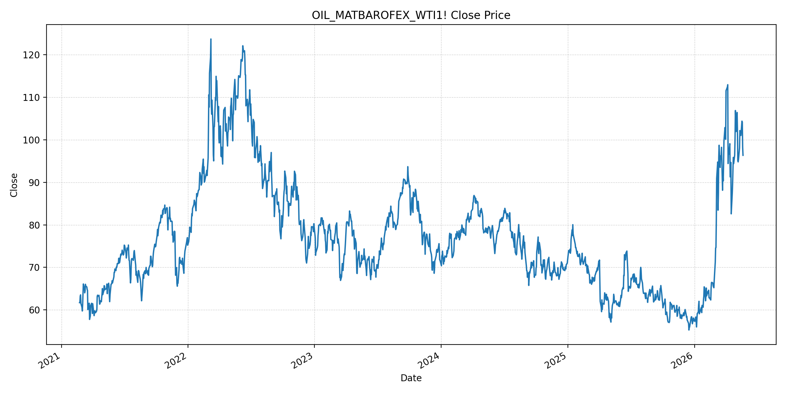
JEPXエリアプライスグラフ（直近一年分）
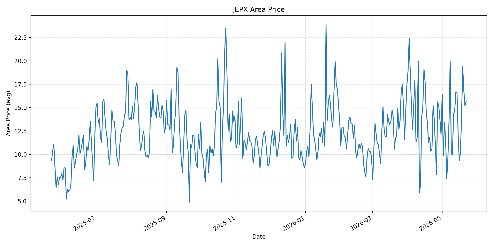
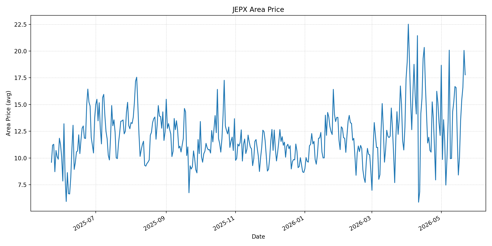
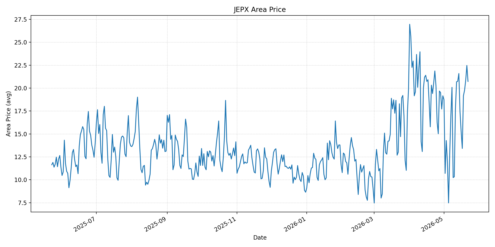
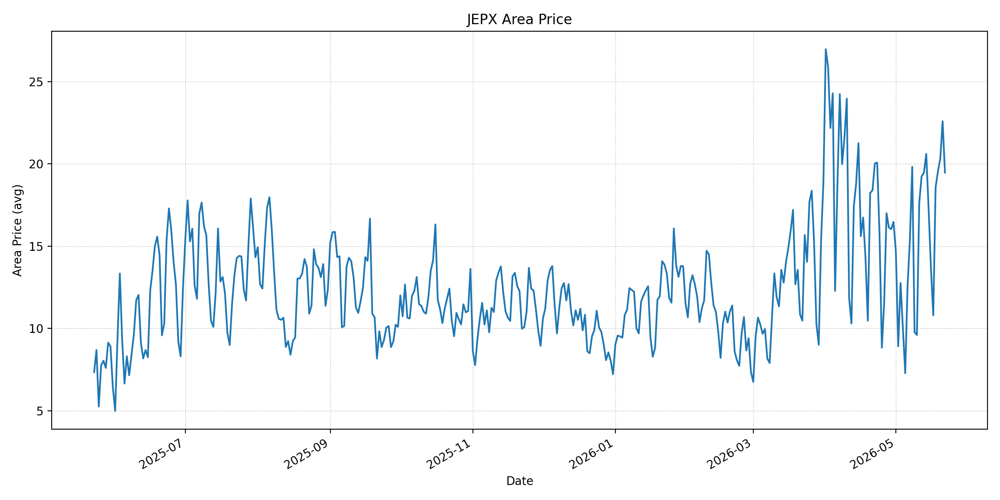
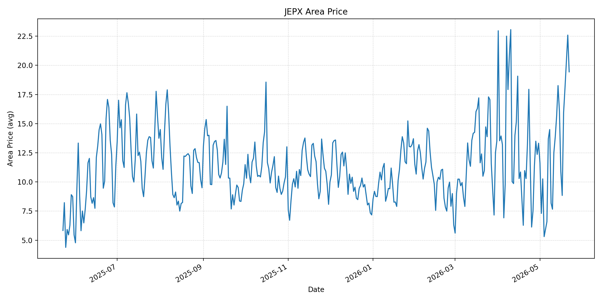
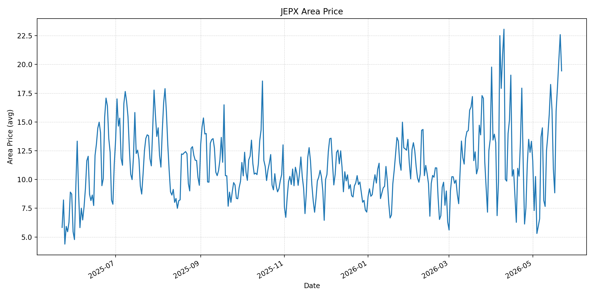
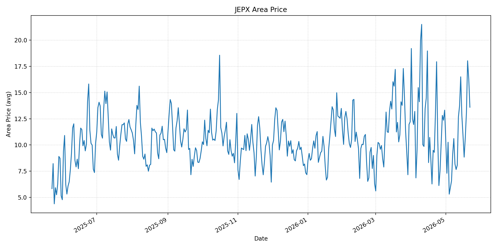
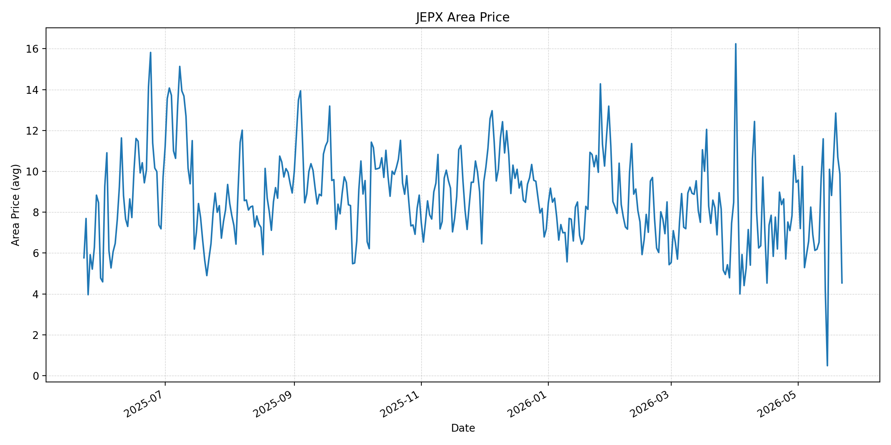
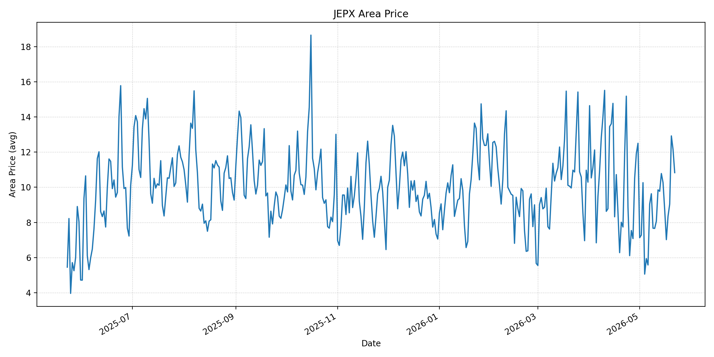
短期トレンド
JKMとJEPXシステムプライスの推移グラフ
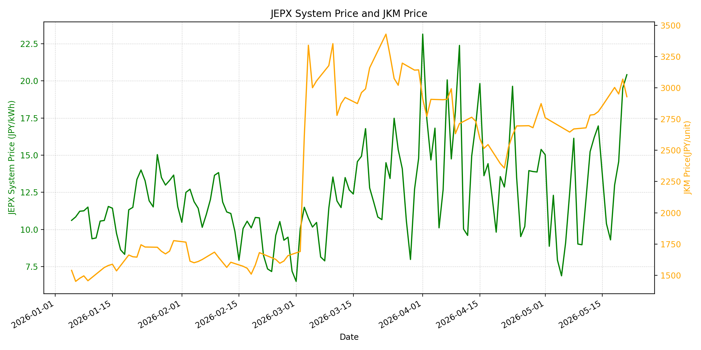
WTIの推移グラフ
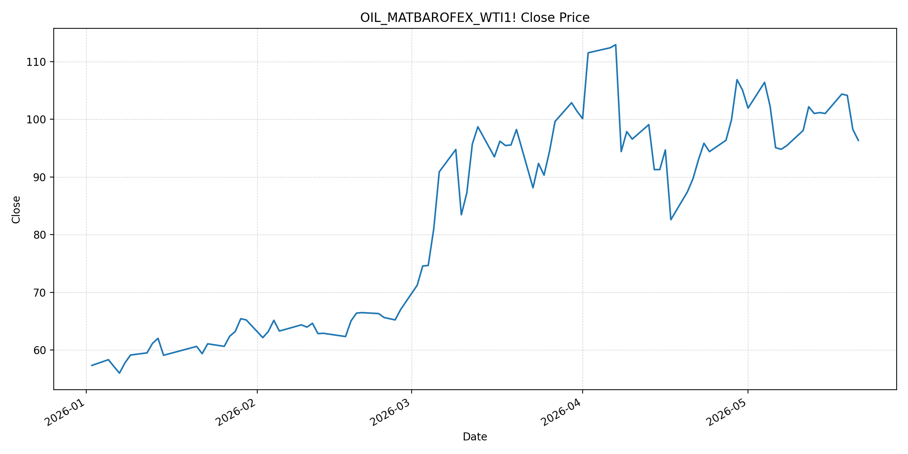
JEPXシステムプライス
JEPXは受渡日ベースの最新非空値で評価しています。最新値は 2026-05-22 分です。先週終値は 2026-05-15 時点の直近値、先月終値は 2026-04-30 時点の直近値で評価しています。
| エリア | 当日価格 | 前日価格 | 前日比（％） | 先週終値 | 先週比（％） | 先月終値 | 先月比（％） | 過去最高値 | 最高値比（％） |
|---|---|---|---|---|---|---|---|---|---|
| システム | 16.9 | 20.42 | -17.24 | 13.67 | 23.63 | 15.39 | 9.81 | 64.06 | -73.62 |
| 北海道 | 15.63 | 15.18 | 2.96 | 12.14 | 28.75 | 12.11 | 29.07 | 73.92 | -78.85 |
| 東北 | 17.78 | 20.06 | -11.37 | 12.14 | 46.46 | 12.11 | 46.82 | 84.92 | -79.06 |
| 東京 | 20.73 | 22.47 | -7.74 | 17.46 | 18.73 | 19.16 | 8.19 | 86.13 | -75.93 |
| 中部 | 19.47 | 22.59 | -13.81 | 17.29 | 12.61 | 16.47 | 18.21 | 52.06 | -62.6 |
| 北陸 | 19.44 | 22.59 | -13.94 | 16.05 | 21.12 | 13.32 | 45.95 | 46.48 | -58.18 |
| 関西 | 19.44 | 22.59 | -13.94 | 16.05 | 21.12 | 13.32 | 45.95 | 46.48 | -58.18 |
| 中国 | 13.6 | 16.3 | -16.56 | 12.79 | 6.33 | 13.32 | 2.1 | 46.48 | -70.74 |
| 四国 | 4.54 | 9.87 | -54 | 0.49 | 826.53 | 9.46 | -52.01 | 46.48 | -90.23 |
| 九州 | 10.83 | 12.15 | -10.86 | 10.27 | 5.45 | 12.5 | -13.36 | 40.54 | -73.29 |
LNG先物価格
最新値は 2026-05-21 の LNG(close) です。先週終値は 2026-05-14 時点の直近値、先月終値は 2026-04-30 時点の直近値で評価しています。
| 当日価格 | 前日価格 | 前日比（％） | 先週終値 | 先週比（％） | 先月終値 | 先月比（％） | 過去最高値 | 最高値比（％） |
|---|---|---|---|---|---|---|---|---|
| 2929 | 3070 | -4.59 | 2810 | 4.23 | 2874 | 1.91 | 10319 | -71.62 |
石油先物価格
最新値は 2026-05-21 の OIL(close) です。先週終値は 2026-05-14 時点の直近値、先月終値は 2026-04-30 時点の直近値で評価しています。
| 当日価格 | 前日価格 | 前日比（％） | 先週終値 | 先週比（％） | 先月終値 | 先月比（％） | 過去最高値 | 最高値比（％） |
|---|---|---|---|---|---|---|---|---|
| 96.35 | 98.26 | -1.94 | 101.17 | -4.76 | 105.07 | -8.3 | 123.7 | -22.11 |
ニュース
イラン情勢に関するニュース
- 2026年5月21日、TBSは、トランプ米大統領がイラン側の回答を「あと数日待つ」と述べ、米側が期待する回答でなければ攻撃を再開すると警告したと報じました。交渉期待は残る一方、再攻撃リスクは消えていません。 参照: TBS CROSS DIG with Bloomberg, 2026-05-21
- 2026年5月21日、TBSは、米国とイランが「最終段階」にあるとの発言で原油価格が急落した一方、双方が対立激化を警告していると報じました。合意期待と軍事リスクが同時に市場を揺らしています。 参照: TBS CROSS DIG with Bloomberg, 2026-05-21
ホルムズ海峡経由の石油・LNGに関するニュース
- 2026年5月21日、TBSは、ゴールドマン・サックスが5月の世界の原油・石油製品在庫の取り崩しを日量870万バレルと推計し、ホルムズ海峡を通る原油輸出が通常時の5%にとどまると分析したと報じました。現物市場の逼迫は続いています。 参照: TBS CROSS DIG with Bloomberg, 2026-05-21
- 2026年5月21日、TBSは、20日の原油相場が大幅続落し、WTIが98.26ドルで終了したと報じました。韓国や中国のVLCCがホルムズ通過を試みていることも伝えられ、通航再開期待は強まりましたが、輸送正常化はまだ確認途上です。 参照: TBS CROSS DIG with Bloomberg, 2026-05-21
ホルムズ海峡経由でない石油・LNGに関するニュース
- 2026年5月21日、TBSは、4月の貿易統計で中東からの原油輸入量が前年同月比67.2%減少し、全世界からの原油輸入量も63.7%減少したと報じました。一方、米国からの原油輸入は4割近く増加し、非ホルムズ調達へのシフトが進んでいます。 参照: TBS CROSS DIG with Bloomberg, 2026-05-21
- 2026年5月21日、TBSは、中ロ首脳会談でエネルギー分野の協力強化が確認され、中国がホルムズ混乱の中でロシア産原油の輸入を増やしていると報じました。アジア全体で非ホルムズ原油を巡る調達競争が強まっています。 参照: TBS CROSS DIG with Bloomberg, 2026-05-21
日本国内のイラン戦争に関係するニュース
- 2026年5月21日、TBSは、日本の4月貿易統計でホルムズ封鎖の影響が顕在化し、中東からの原油と揮発油輸入が大幅に減ったと報じました。国内燃料需給は、代替調達と在庫取り崩しに依存する構図です。 参照: TBS CROSS DIG with Bloomberg, 2026-05-21
- 2026年5月21日、TBSは、国連のグテーレス事務総長が都内会見でイラン情勢によるエネルギー価格高騰に触れ、ホルムズ海峡を念頭に航行の自由と停戦違反の終了を呼びかけたと報じました。JEPX制度への直接発表は確認できませんでした。 参照: TBS CROSS DIG with Bloomberg, 2026-05-21
インサイト
ニュース事項による日本の電力市場への影響（短期：数日〜1週間）
- JEPXシステムプライスは 16.9 円/kWhで前日比 -17.24% と反落しましたが、先週比 23.63%、先月比 9.81% です。東京 20.73、中部 19.47、北陸・関西 19.44 はなお高く、広域で高値圏が残っています。
- LNGは 2929 と前日比 -4.59% ですが先週比 4.23%、OILは 96.35 と前日比 -1.94%、先週比 -4.76% です。原油は合意期待で下がりましたが、ホルムズ経由輸出が通常時の5%との分析は、短期の燃料リスクが解消していないことを示します。
- 数日から1週間では、原油安がJEPXを下押しする一方、LNG高と国内の代替調達依存が火力限界費用を支えます。四国 4.54 のような低値エリアもありますが、東京・中部・北陸・関西では高めの調達余地を見ておくべきです。
ニュース事項による日本の電力市場への影響（長期：1ヶ月〜半年）
- OILは先月比 -8.3% まで下落しましたが、LNGは先月比 1.91% と上回っています。ホルムズ正常化が遅れ、世界在庫の取り崩しが続けば、原油よりもLNGと輸送コストの高止まりが日本の火力燃料費に残りやすくなります。
- 4月の中東原油輸入が 67.2% 減少し、米国からの原油輸入が増えたことは、非ホルムズ調達への構造的な転換を示します。ただし遠距離調達、品質差、船腹・保険コストが加わるため、1ヶ月から半年では供給量確保とコスト上昇が同時に進む可能性があります。
- JEPXはシステムで先月比 9.81%、北陸・関西で 45.95%、東北で 46.82% 上昇しています。長期の電力調達では、全国平均だけでなくエリア別の燃料感応度と代替調達コストを織り込んだヘッジが必要です。